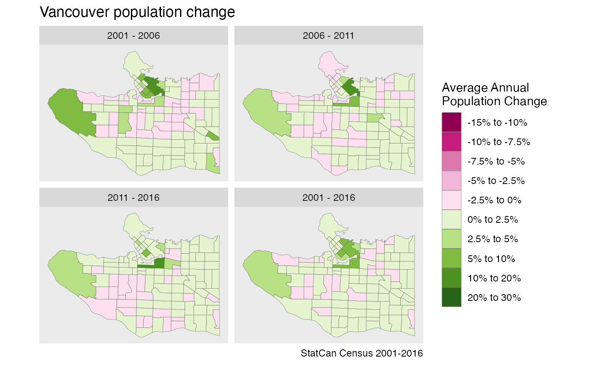

Data often comes on different yet congruent geographies. A prime example is census data, where census geographies change between census years, yet boundary changes happen in a way that one can create a “least common geography” by aggregating up some areas in each census until the resulting aggregated areas match across census years.
To see how this works we will start with census tract level geographies in Vancouver across four census years to understand population change. In this example we are utilizing the {cancensus} package to import the data for three separate census years.
vsb_regions <- list(CSD=c("5915022","5915803"), CT=c("9330069.01","9330069.02","9330069.00")) geo_identifiers <- c() years <- seq(2001,2016,5) data <- years %>% lapply(function(year){ dataset <- paste0("CA",substr(as.character(year),3,4)) uid_label <- paste0("GeoUID",dataset) geo_identifiers <<- c(geo_identifiers,uid_label) get_census(dataset, regions=vsb_regions, geo_format = 'sf', level="CT", quiet=TRUE) %>% sf::st_sf() %>% rename(!!as.name(uid_label):=GeoUID) %>% mutate(Year=year) }) %>% setNames(years)
Plotting the cenus tracts for our four census years shows how census tracts changed over the years.
data %>% bind_rows() %>% ggplot() + geom_sf(fill="steelblue",colour="brown") + coord_sf(datum=NA) + facet_wrap("Year") + labs(title="Vancouver census tracts",caption="StatCan Census 2001-2016")
For this example we will estimate the correspondence between these regions from the geographic data using the estimate_tongfen_correspondence function. Unfortunately this is not an exact science, for example over the years census regions get adjusted to better align with the road network. Other harmless boundary adjustemens can happen along water boundaries, or re-jigging boundaries in unpopulated areas.
We are going to impose a tolerance of 200m, where we are calling two census tract the same if they differ by no more than 200m. We are specifying that these calculations should be carried out in the Statistics Canada Lambert (EPSG:3347) refernce system with units metres.
correspondence <- estimate_tongfen_correspondence(data, geo_identifiers, tolerance=200, computation_crs=3347) head(correspondence) #> # A tibble: 6 x 7 #> GeoUIDCA01 GeoUIDCA06 GeoUIDCA11 GeoUIDCA16 TongfenMethod TongfenID TongfenUID #> <chr> <chr> <chr> <chr> <chr> <chr> <chr> #> 1 9330040.01 9330040.01 9330040.01 9330040.01 estimate 9330040.… GeoUIDCA0… #> 2 9330050.04 9330050.04 9330050.04 9330050.04 estimate 9330050.… GeoUIDCA0… #> 3 9330054.02 9330054.02 9330054.02 9330054.02 estimate 9330054.… GeoUIDCA0… #> 4 9330060.02 9330060.02 9330060.02 9330060.02 estimate 9330060.… GeoUIDCA0… #> 5 9330001.01 9330001.01 9330001.01 9330001.01 estimate 9330001.… GeoUIDCA0… #> 6 9330015.01 9330015.01 9330015.01 9330015.01 estimate 9330015.… GeoUIDCA0…
Before we proceed it is useful to check the integrity of our correspondence. One quick way to understand mismatches is to aggregate up the geographies for each year to the common geography and compare their areas. The (logarithm of the) maximum ratio of areas for each region of the common geography gives some measure of mismatch, where taking the logarithm serves to make this measure symmetric.
The check_tongfen_areas function does exactly this, and we inspect the list of areas in the common geography with maximum log area ratios greater than 0.1. This corresponds to a difference in area of about 10% or more.
tongfen_area_check <- check_tongfen_areas(data,correspondence) tongfen_area_check %>% filter(max_log_ratio>0.1) #> # A tibble: 2 x 7 #> TongfenID area_2001 area_2006 area_2011 area_2016 TongfenMethod max_log_ratio #> <chr> [m^2] [m^2] [m^2] [m^2] <chr> <dbl> #> 1 9330005.00 1370041 1565155 1569750 1593819 estimate 0.151 #> 2 9330008.00 5509380 6970320 6943538 6943917 estimate 0.235
We see that there are two such regions, and it appears that the mismatch is mostly due to the 2001 geography being different. It’s worthwhile to inspect the regions in question by aggregating up the data to the common geography based on 2001 and one of the other geographies and compare the result.
mismatched_tongfen_ids <- tongfen_area_check %>% filter(max_log_ratio>0.1) %>% pull(TongfenID) mismatch_correspondence <- correspondence %>% filter(TongfenID %in% mismatched_tongfen_ids) c(2001,2016) %>% lapply(function(year){ tongfen_aggregate(data,mismatch_correspondence,base_geo = year) %>% mutate(Year=year) }) %>% bind_rows() %>% ggplot() + geom_sf(data=sf::st_union(data[[4]])) + geom_sf(fill="steelblue",colour="brown") + coord_sf(datum=NA) + facet_wrap("Year") + labs(title="Tongfen area mismatch check",caption="StatCan Census 2001-2016")

It appears that the difference is explained by the 2001 geography having the hydro layer clipped out and better fit the north arm of the Fraser river. For completeness we will also visually inspect the common geographies based on all four input geographies.
years %>% lapply(function(year){ tongfen_aggregate(data,correspondence,base_geo = year) %>% mutate(Year=year) }) %>% bind_rows() %>% ggplot() + geom_sf(fill="steelblue",colour="brown") + coord_sf(datum=NA) + facet_wrap("Year") + labs(title="Tongfen aggregates visual inspection",caption="StatCan Census 2001-2016")
Population change
It’s time to go back to our original goal of mapping population change. For this we need to specify how to aggregate up the population data, which is by simply adding them up. The meta_for_additive_variables convenience function generates the appropriate metatdata that specifies how to deal with this data.
meta <- meta_for_additive_variables(years,"Population") meta #> # A tibble: 4 x 8 #> variable dataset label type aggregation rule geo_dataset parent #> <chr> <dbl> <chr> <chr> <chr> <chr> <dbl> <lgl> #> 1 Population 2001 Population_20… Manu… Additive Additi… 2001 NA #> 2 Population 2006 Population_20… Manu… Additive Additi… 2006 NA #> 3 Population 2011 Population_20… Manu… Additive Additi… 2011 NA #> 4 Population 2016 Population_20… Manu… Additive Additi… 2016 NA
What’s left is to add up the population data. We choose 2001 as the base year as the clipped boundaries look better.
breaks = c(-0.15,-0.1,-0.075,-0.05,-0.025,0,0.025,0.05,0.1,0.2,0.3) labels = c("-15% to -10%","-10% to -7.5%","-7.5% to -5%","-5% to -2.5%","-2.5% to 0%","0% to 2.5%","2.5% to 5%","5% to 10%","10% to 20%","20% to 30%") colors <- RColorBrewer::brewer.pal(10,"PiYG") compute_population_change_metrics <- function(data) { geometric_average <- function(x,n){sign(x) * (exp(log(1+abs(x))/n)-1)} data %>% mutate(`2001 - 2006`=geometric_average((`Population_2006`-`Population_2001`)/`Population_2001`,5), `2006 - 2011`=geometric_average((`Population_2011`-`Population_2006`)/`Population_2006`,5), `2011 - 2016`=geometric_average((`Population_2016`-`Population_2011`)/`Population_2011`,5), `2001 - 2016`=geometric_average((`Population_2016`-`Population_2001`)/`Population_2001`,15)) %>% gather(key="Period",value="Population Change",c("2001 - 2006","2006 - 2011","2011 - 2016","2001 - 2016")) %>% mutate(Period=factor(Period,levels=c("2001 - 2006","2006 - 2011","2011 - 2016","2001 - 2016"))) %>% mutate(c=cut(`Population Change`,breaks=breaks, labels=labels)) }
plot_data <- tongfen_aggregate(data,correspondence,meta=meta,base_geo = "2001") %>% compute_population_change_metrics() ggplot(plot_data,aes(fill=c)) + geom_sf(size=0.1) + scale_fill_manual(values=setNames(colors,labels)) + facet_wrap("Period",ncol=2) + coord_sf(datum=NA) + labs(fill="Average Annual\nPopulation Change", title="Vancouver population change", caption = "StatCan Census 2001-2016")
